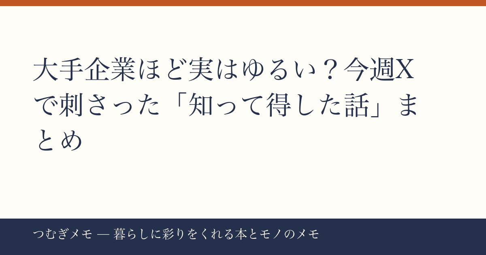

こんにちは、つむぎです。今週もXやら本やらをぼんやり眺めていたら、「あ、それ知らなかった」と思わず手が止まった話がいくつかあったので、まとめておきます。
---
今週Xで147いいねを集めていた投稿が、なかなか刺さる内容だった。
ざっくり言うと、年収と労働環境の組み合わせが世間のイメージと逆、という話。多くの人が「大手企業は給料が高い代わりにハードワーク、中小企業は給料は低めだけどのんびり」というイメージを持っているけれど、実態はむしろ逆のケースが多い、というもの。
これ、なぜそうなるかを考えると納得感がある。大手企業は人員が多く、業務が細分化・マニュアル化されているので、一人ひとりの仕事量は思ったより多くない。加えて、組合の力が強く残業規制が徹底されているところも多い。一方で中小企業は、一人が複数の役割を兼ねることが当たり前で、人が少ない分だけ一人にかかる負荷が大きくなりやすい。
もちろん会社によるし、業種によっても全然違う。でも「大手=激務」という思い込みで転職や就活の選択肢を狭めているとしたら、もったいないかもしれない。自分が次に働く場所を考えるとき、給料と一緒に「実際の業務量」を具体的に調べる習慣を持っておくといいな、と改めて思わせてくれた投稿だった。
---
今週「30代社会人が読むべき本達」という投稿が213いいねを集めていた。読書系の投稿がこれだけ伸びるのは、それだけ「何を読めばいいかわからない」と思っている人が多いからだろうと思う。
あわせて、Amazonで『さいはての彼女』を見る（原田マハ）の感想投稿も151いいねで伸びていた。「迷い疲れた心を再生する物語」という紹介文が刺さったのか、「無性に旅に出たくなる」という感想に共感した人が多かった様子。原田マハさんの作品はアートや旅をテーマにしたものが多く、忙しい日常のなかで「もっと違う景色を見たい」と感じているときに手に取ると響きやすい。
また、Amazonで『辺境・近境』を見る（村上春樹）の感想投稿も静かに注目を集めていた。紀行文というジャンルで、読んだ人が「ずっと忘れることのないシーンだった」と書いていたのが印象的だった。小説ではなく紀行文という切り口で村上春樹を読む、というのは意外と新鮮な入り口かもしれない。
本を選ぶときに「誰かの感想」が背中を押してくれることって多い。Xの読書感想タグはそういう意味でけっこう使える情報源だと思っている。
(PR) 気になる本や雑誌をまとめて読みたいなら、定期購読サービスも選択肢の一つ。Fujisan.co.jp 雑誌のオンライン書店を見るでは最大70%割引で雑誌が読めるので、興味のある分野を掘り下げたいときに覚えておくと便利です。
---
SNS運用系の投稿もいくつか伸びていた。なかでも「毎日見かけるアカウントは自然と覚えられる」という話が114いいねで注目されていた。
これ、SNSに限った話じゃないと思う。仕事でも、日常でも、頻度と接触回数が信頼や親しみの土台になるという原則はどこでも共通している。心理学でいう「単純接触効果」そのままで、別に特別なことを言わなくても、継続的に存在し続けること自体に価値がある。
バズる投稿を1本作るより、毎日コツコツ積み上げる方が長期的には強い、という趣旨の投稿も60いいねで共感を集めていた。一発逆転より地道な継続、というのは面白みに欠けるアドバイスだけど、結局これが一番効くんだよなあと思う。
自己成長の文脈でも同じで、毎日少しずつ読書する人と、たまに一気読みする人では、1年後の蓄積量がぜんぜん違ってくる。「継続は最大の武器」というのはシンプルだけど、やっぱり本質をついている。
---
このブログ「つむぎメモ」は、AIと一緒に運用している実験的なメディアです。ネタ集め・構成・文章の整理にAIを活用しながら、最終的な判断や言葉の選び方は僕自身でやっています。どんな形のメディア運営が面白くなるか、引き続き試行錯誤していくつもりです。また来週もよろしくお願いします。
📚 目次へ